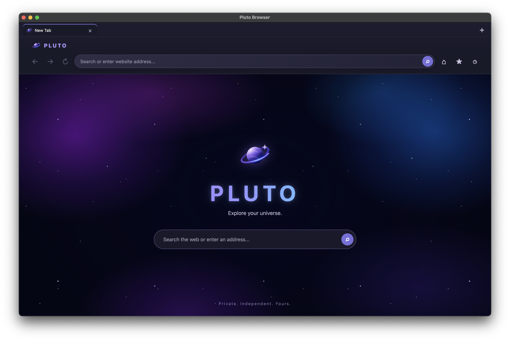

Multi-tab Browsing
Organize your workflows with fluid, responsive tabs. Open new pages, close tabs with standard shortcuts, and reopen closed sessions effortlessly.
Every tool and detail in Pluto is built to give you a distraction-free window to the web, with nothing unnecessary.
Organize your workflows with fluid, responsive tabs. Open new pages, close tabs with standard shortcuts, and reopen closed sessions effortlessly.
Save favorite websites with a single click. Keep essential daily resources easily accessible right on your start page whenever you need them.
Revisit previously explored websites with an integrated history log that stays strictly on your machine and can be cleared at any time.
Search the open web with confidence. Pluto routes address bar queries through DuckDuckGo by default, ensuring your searches aren't tracked or monetized.
Immerse yourself in a tranquil dark space aesthetic. Deep celestial violet tones, soft glow highlights, and balanced typography reduce eye fatigue.
Built on Electron security best practices: sandboxed context isolation, zero telemetry, and restricted webview permissions.

Modern browsers have increasingly shifted toward bundled services, advertising tie-ins, and complex settings. Pluto prioritizes the core fundamentals.
Download Pluto for macOS and experience modern desktop browsing reimagined.
Download Pluto ↓